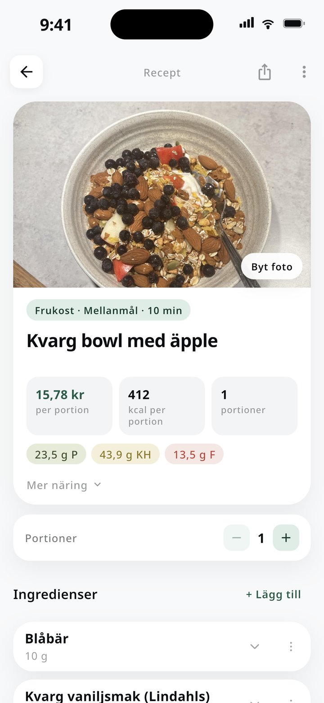
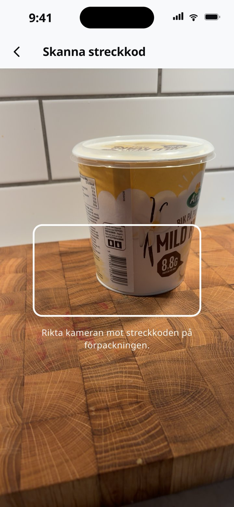
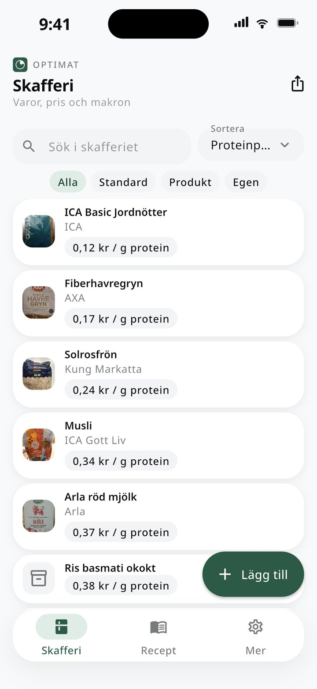
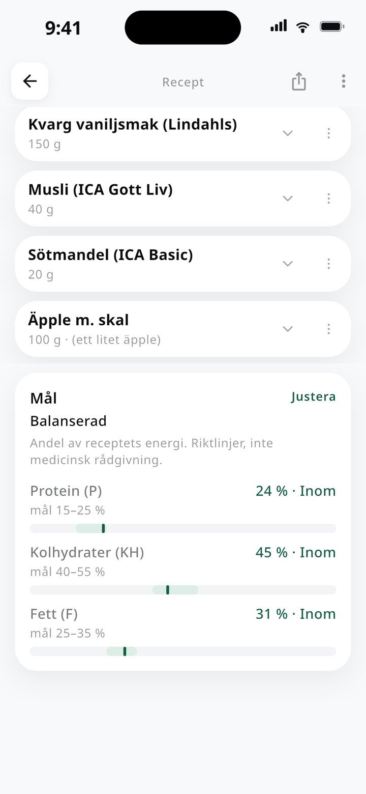
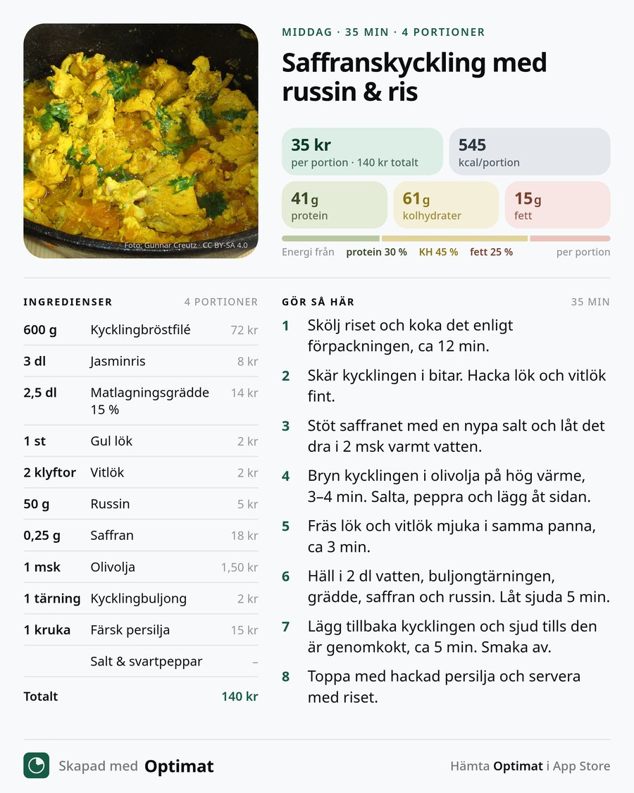

01
Skanna varor
Rikta kameran mot streckkoden så hittar Optimat produkten. Du kan också söka i Livsmedelsverkets svenska näringsdata och i Open Food Facts.
Skanna varor, bygg recept och se vad varje portion kostar och ger i energi, protein, kolhydrater och fett.
Ett engångsköp, ingen prenumeration. Ingen inloggning.
För iPhone, iOS 15 eller senare.

01
Rikta kameran mot streckkoden så hittar Optimat produkten. Du kan också söka i Livsmedelsverkets svenska näringsdata och i Open Food Facts.

02
Sortera varorna på pris, protein, fett eller namn. Se direkt vad ett gram protein kostar, med priser du lagt in själv.

03
Lägg till ingredienser och följ energi, protein, kolhydrater och fett per portion medan du bygger. Lägg in kostnad och se pris per portion. Sätt egna mål.

04
Ett recept ska gå att ta med sig. Från receptet i Optimat kan du dela det som bild, spara det som PDF eller exportera det som en fil. Filen kan också bära alla dina varor och recept, så att du kan flytta dem till en annan enhet.
Inget konto behövs. Allt sparas lokalt på din iPhone, så det är du som bestämmer vart filerna tar vägen.

Receptet blir en färdig bild med foto, ingredienser, instruktioner samt pris och makron per portion, märkt ”Skapad med Optimat”. Spara den som PNG eller JPEG, eller skicka den via valfri app på iPhone.
Receptet som ett dokument i PDF-format. Spara det på din iPhone eller dela det vidare via valfri app.
Receptet sparas som en fil som du själv förvarar eller skickar vidare, till exempel i ett meddelande. Filen kan också innehålla alla dina varor och recept och läsas in i Optimat på en annan enhet.
Byt telefon
Allt sparas lokalt på din iPhone, och det finns inget konto att logga in på. När du byter telefon exporterar du därför dina varor och recept till en fil och läser in den på den nya telefonen.
Filen ligger hos dig. Det gör den också till ett sätt att säkerhetskopiera dina data: du bestämmer själv var den sparas. Appen synkar inget via molnet.
Skafferiets varor och dina recept samlas i en och samma fil.
Skicka den via valfri app på iPhone, eller spara den där du själv vill ha den.
Öppna Optimat och läs in filen, så finns varor och recept där igen.
Svenska näringsdata.
Produktdata.
Prisdata.
Priser du lägger in själv fungerar också.
Kärnfunktionerna kräver inget konto. Allt sparas lokalt på din iPhone. Optimat är ett engångsköp, inte en prenumeration.
Skapa smarta recept du kan laga gång på gång, utan att logga allt hela tiden.
Hämta i App StorePriset visas i App Store.